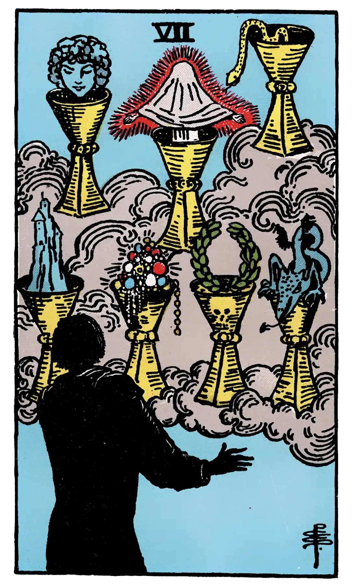

Seven of Cups

A.E.W.
Upright
Fairy favours, images of reflection, sentiment, imagination, things seen in the glass of contemplation; some attainment in these degrees, but nothing permanent or substantial is suggested.
Additionally
Fair child; idea, design, resolve, movement.
Recurrence
2 - News.
3 - Infirmity.
4 - Intrigue.
Reversed
Desire, will, determination, project.
Additionally
Success, if accompanied by the Three of Cups.
Recurrence
2 - Women of no repute.
3 - Joy.
4 - Quarrellers.
S.L.M.M.
Upright
Idea, Sentiment, Reflection, Project
Reversed
Plan, Design, Resolution, Decision.
Description
Strange chalices of vision, but the images are more especially those of the fantastic spirit.